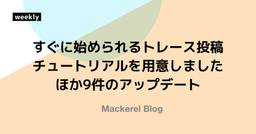

Mackerel ブログ #mackerelio
https://mackerel.io/ja/blog/
Mackerelからのお知らせです
フィード

すぐに始められるトレース投稿チュートリアルを用意しました ほか9件のアップデート 4
4
Mackerel ブログ #mackerelio
主なプログラミング言語向けのトレース投稿チュートリアルを用意しました。簡単にMackerelへのトレース投稿を体験できます
4日前

ハンズオンイベント「わかった気になる分散トレーシング」を3月26日（水）に開催します
Mackerel ブログ #mackerelio
こんにちは。Mackerel CREチームプランナーのid:meymaoです。 3月26日（水）に「わかった気になる分散トレーシング」をはてな東京オフィスにて開催します！
12日前
トレース機能に関する複数の改修を実施しました ほか3件のアップデート
Mackerel ブログ #mackerelio
こんにちは！Mackerel チーム CRE の須藤（id:do-su-0805）です。今回のアップデート内容をお知らせいたします。 トレース機能に関する複数の改修を実施しました HTTPサーバーパフォーマンスに表示される統計の集計対象として、http.urlが含まれたスパンを利用できるようになりました HTTPサーバーパフォーマンスに表示される統計の集計対象として、リクエストを送信したとき(クライアントのとき)のスパンを除外しました トレース一覧画面での「レイテンシーの分布」表示範囲が、指定した時刻より少し先まで表示されるようになりました トレース、HTTPサーバ、データベースにて指定したサ…
15日前
トレースとメトリックの連携が強化されました！共通の属性を設定することでトレースからメトリックをすぐに参照できます
Mackerel ブログ #mackerelio
Mackerelの新機能で分散トレーシングがメトリックエクスプローラーと連携！UI言語の英語化も可能に。
18日前
GKE 1.32以降でのmackerel-container-agentの利用について
Mackerel ブログ #mackerelio
GKE 1.32以降の環境でmackerel-container-agentをご利用の方は、設定の見直しをお願いいたします
24日前
データベースパフォーマンス機能がより便利になりました ほか7件のアップデート
Mackerel ブログ #mackerelio
こんにちは！Mackerel チーム CRE の戸谷（id:KGA）です。今回のアップデート内容をお知らせいたします。 データベースパフォーマンス機能がより便利になりました HTTPサーバーパフォーマンスに関する統計情報が確認できるようになりました アラートのログを取得できるAPIを追加しました KCPS環境でもメールアドレスがバウンス登録された場合にオーナーへ通知されるようになりました mackerel-agentやプラグインなどOSSの更新 mackerel-agentにKeep-Aliveを無効にできるオプションを追加しました mackerel-plugin-jvmにグラフ名とラベルを指…
1ヶ月前
【資料公開中！】わかった気になる分散トレーシング - OpenTelemetryでトレーシングに入門するハンズオン！を開催しました！
Mackerel ブログ #mackerelio
Mackerelのハンズオンイベント「OpenTelemetryでトレーシングに入門するハンズオン！」のレポート。分散トレーシングの基本から実際の活用法まで、細かく解説。
1ヶ月前
HTTPサーバーパフォーマンスに関する統計情報を一覧できるようになりました
Mackerel ブログ #mackerelio
こんにちは！Mackerel チーム の渡辺（id:wtatsuru）です。今回はHTTPサーバーパフォーマンス機能のリリースについてお知らせします！ HTTPサーバーパフォーマンスに関する統計情報を一覧できるようになりました APM機能に関するフィードバックをお待ちしております HTTPサーバーパフォーマンスに関する統計情報を一覧できるようになりました Mackerelトレーシング機能に「HTTPサーバーパフォーマンス」というメニューが加わりました！！ 「HTTPサーバーパフォーマンス」画面では、アプリケーションのトレーススパンに含まれるHTTPリクエストのパフォーマンスに関する統計情報を一…
1ヶ月前
Mackerelはアプリケーションパフォーマンスモニタリングへ対応します
Mackerel ブログ #mackerelio
アプリケーションの挙動に注目して性能やエラーの状況を把握し、ボトルネックや問題の発見を助けるAPM機能をいち早く体験していただくため、APMを実現するためのシグナルであるトレーシング機能を、事前申し込み不要で提供開始いたします
2ヶ月前
属人化しやすい運用知見をチーム知識に昇華させるためのMackerel活用術
Mackerel ブログ #mackerelio
この記事では、プロダクト運用において活用されている有識者の経験や知識を、Mackerelの機能を利用して表現することで、特定個人に依存せずチームの知識として活用・運用する事例についてご紹介いたします。
2ヶ月前
ホスト一覧をクラウドインテグレーションのサービス単位で絞り込み表示できるようになりました ほか4件のアップデート
Mackerel ブログ #mackerelio
こんにちは！Mackerel チーム CRE の五十嵐（id:masarasi）です。今回のアップデート内容をお知らせいたします。 ホスト一覧をクラウドインテグレーションのサービス単位で絞り込み表示できるようになりました サービスメトリックのグラフをAPIで削除できるようになりました トレースのデータベースパフォーマンスでクエリのコピーや全文表示ができるようになりました しばらく投稿がないトレースのサービスをサジェストされないようにしました サポート対象OSを変更しました ホスト一覧をクラウドインテグレーションのサービス単位で絞り込み表示できるようになりました ホスト一覧ではサービス/ロールや…
2ヶ月前
ハンズオンイベント「わかった気になる分散トレーシング」を2月13日（木）に開催します
Mackerel ブログ #mackerelio
2025年2月13日（木）にハンズオンイベント「わかった気になる分散トレーシング」をはてな東京オフィスにて開催します！
2ヶ月前
アプリケーションからデータベースへのクエリの実行頻度をVaxilaで調べられるようになりました ほか2件のアップデートのお知らせ
Mackerel ブログ #mackerelio
DBクエリの実行頻度がVaxilaでわかるようになりました。利用状況タブにおいて過去の月の利用状況もたどれるようになりました
3ヶ月前
Mackerel Advent Calendar 2024 完走！参加エントリーと感想を一挙公開
Mackerel ブログ #mackerelio
こんにちは！Mackerel CREチーム プランナー 兼 2024年アドベントカレンダー担当のid:meymao です。12月1日から始まったMackerel Advent Calendar 2024、たくさんの方にご参加いただき、無事完走しました！記事をご投稿いただいた皆さま、読んでくださった皆さま、ありがとうございました！ 今年もMackerelチームのメンバーだけでなく、はてな社内で利用しているスタッフ、そしてユーザーの皆さまからもご参加いただき、毎日エントリーを楽しみにする素敵な期間を過ごすことができました。 本記事では、Mackerel CREチームのid:missasan, id…
3ヶ月前
VaxilaのUIが日本語表記に対応し、URLにオーガニゼーション名が含まれるようになりました ほか7件のアップデート
Mackerel ブログ #mackerelio
Mackerel チーム CRE の須藤 ( id:do-su-0805 )です。もうそろそろ本年も終わり、2025年が始まりますね。 Mackerel ではラベル付きメトリックやSAML対応、価格体系の変更等様々な変化があり、あっというまの一年となりました。 2025年もさらに進化を目指すMackerelをどうぞよろしくお願いいたします。 それでは、2024年最後のアップデート内容をご紹介いたします。 VaxilaのUIが日本語表記に対応し、URLにオーガニゼーション名が含まれるようになりました 退役済みホスト一覧が退役日時順で表示されるようになりました カスタムダッシュボードで PromQ…
3ヶ月前
シンプルな例から学ぶ、トレーシングを使って問題を発見する方法
Mackerel ブログ #mackerelio
シンプルなWebアプリケーションを用いた分散トレーシングの設定方法と、MackerelのVaxilaを利用したトレースの可視化と分析手法を紹介します。
3ヶ月前
年末年始期間中におけるサポート窓口対応の休業のお知らせ
Mackerel ブログ #mackerelio
以下の期間はサポート窓口の対応をお休みいたします。 休業期間：2024年12月28日（土）〜 2025年1月6日（月） この期間中にいただいたお問い合わせについては、2025年1月7日（火）以降に順次対応いたします。 また、2024年12月27日（金）までにいただいたお問い合わせも、1月7日（火）以降の対応になる場合がございます。 ご理解のほど、どうぞよろしくお願いいたします。
3ヶ月前
意思決定のためにOpenTelemetry Metricsを利用する
Mackerel ブログ #mackerelio
Mackerelチームでアプリケーションエンジニアをやっているid:lufiabbです。 この記事はMackerel Advent Calendar 2024の20日目の記事です。昨日はid:kmutoさんの「今年もMackerel CREの仕事に絡めて技術素振りしていた、という話」でした*1。 Mackerelでは、ラベル付きメトリックとしてOpenTelemetry対応を進めていますが、このメトリックを意思決定の参考にする事例をひとつ共有したいなと思います。 背景 Mackerelの外形監視において、お客さまのサイトへ毎分アクセスするクローラはGoで実装しています。GoではTLS接続を行う…
3ヶ月前
Mackerelブログで振り返る、Mackerelの2024年
Mackerel ブログ #mackerelio
こんにちは！Mackerel CREチーム プランナーのid:meymao です。なんだか年々歳を追うごとに1年が過ぎるのが早く感じますよね（この現象を「ジャネーの法則」と言うらしいです）。 2025年がもうすぐやってきてしまいますが、今年はどんなことをしただろうか......ということで、2024年に公開されたMackerelブログのエントリーでMackerelの1年を振り返ってみようと思います。（この記事は Mackerel Advent Calendar 2024 の12日目の記事です。前の日の記事はid:ne-sachirouの「CloudNative Daysのオブザーバビリティを支…
3ヶ月前
Mackerelの公開リポジトリ全部見る 2024年スペシャル
Mackerel ブログ #mackerelio
MackerelのOSSリポジトリを網羅！王道OSSから実験的プロジェクトまで、GitHub上のリポジトリを一挙紹介します。
4ヶ月前
外形監視でOKと判定するHTTPステータスコードを選択可能にしました ほか
Mackerel ブログ #mackerelio
こんにちは！Mackerel チーム CRE の戸谷（id:KGA）です。早いものでもう12月ですね。今回のアップデート内容をお知らせいたします。 外形監視でOKと判定するHTTPステータスコードを選択可能にしました メール配信停止リンクを非表示に設定できるようにしました Mackerelに関するメタデータを取得できるAPIを公開しました 分散トレーシングVaxilaやラベル付きメトリック（OpenTelemetryメトリック）に関する機能の改善を進めています VaxilaがよりMackerelに近づきました。機能の改善も進んでいます メトリックエクスプローラー、ラベル付きメトリックのクエリグ…
4ヶ月前
過去9年のAdvent Calendarエントリーから、「今あらためて読みたい」記事をピックアップ紹介！
Mackerel ブログ #mackerelio
こんにちは！Mackerel CREチーム プランナーのid:meymao です。去年クリスマスケーキを予約せず当日にケーキが買えなかったので、今年はしっかりクリスマスケーキの予約をしました。皆さんはもう予約はお済みですか？ 年末の風物詩、Mackerel Advent Calendarがスタートする12月1日まで、あと2日。今年で10年目のMackerelは、サービスが開始した2014年から毎年 Mackerel Advent Calendar を続けてきました。過去9年で投稿されたさまざまな記事の中には、今でも読んでタメになる・つい試してみたくなる記事がたくさん！ そこで今回は、過去9年間…
4ヶ月前
Mackerelを使いこなす！スタッフ8名に聞いた「推し機能」公開
Mackerel ブログ #mackerelio
こんにちは！Mackerel CREチーム プランナーのid:meymao です。最近作ってよかった料理は「ヤンソンさんの誘惑」です。年末が近づき、Advent Calendar の季節がやってきますね。Mackerelでも毎年恒例のMackerel Advent Calendarを開催します！ そこで今回は Advent Calendar のネタにも丁度いい、Mackerelスタッフの「これは試して欲しい！」推し機能をご紹介します。Advent Calendarを書く予定がある方もない方も、気になる機能があれば、ぜひ試してみてください！ Mackerelスタッフの「これは試して欲しい！」推し…
4ヶ月前
Mackerel Advent Calendar 2024 開催！あなたの技術記事でみんなと知見を共有しませんか？
Mackerel ブログ #mackerelio
こんにちは！Mackerel CREチーム プランナーのid:meymaoです。 毎年恒例となっている Mackerel Advent Calendar の2024年版をQiitaにて公開しました！ qiita.com この機会にMackerelはもちろんのこと、モニタリング・オブザーバビリティ領域に関心がある人も含め、コミュニティ全体で知識を共有し合えることにワクワクしています！ ぜひ皆さまにも、Mackerel Advent Calendar 2024 をアウトプットの機会や学びのきっかけとしていただけると嬉しいです。 Mackerelチームからもスタッフが参加予定です。一緒に楽しみましょ…
4ヶ月前
OpenTelemetry対応のメトリックを正式リリースして価格体系を更新します
Mackerel ブログ #mackerelio
本日より、パブリックベータとして公開していたOpenTelemetry対応のメトリック（ラベル付きメトリック）を正式版としてリリースします。あわせて、今後のMackerelのOpenTelemetry対応の開発方針について紹介します。
5ヶ月前
アラート通知やアラート詳細画面のグラフにおいて、アラートの発生原因となったメトリックのみが表示されるようになりました ほか
Mackerel ブログ #mackerelio
こんにちは！Mackerel チーム CRE の五十嵐（id:masarasi）です。今回のアップデート内容をお知らせいたします。 アラート通知やアラート詳細画面のグラフにおいて、アラートの発生原因となったメトリックのみが表示されるようになりました グラフを全画面にした際に、指定していた期間が引き継がれて表示されるようになりました カスタムダッシュボードおまかせ生成機能に関するアップデート Mackerel のステータス情報を Slack と Microsoft Teams に通知できるようになりました Mackerel Tech Day - モニタリング・オブザーバビリティの変遷とこれからの…
5ヶ月前
Mackerel Tech Day - モニタリング・オブザーバビリティの変遷とこれからの展望！を開催しました！
Mackerel ブログ #mackerelio
2024年10月22日に開催されたMackerel Tech Dayの詳細レポート。オブザーバビリティの進化や今後の展望について、業界の専門家たちの議論や洞察をお届けします。
5ヶ月前
Web・App・DBを俯瞰するダッシュボードを一瞬で作る「おまかせ生成」機能の紹介
Mackerel ブログ #mackerelio
カスタムダッシュボード作成の課題を解決する「おまかせ生成」を詳解。Mackerelがオブザーバビリティ時代に向けた新たな価値を提供。
5ヶ月前
AWSインテグレーションがAmazon Athenaに対応しました ほか6件のお知らせ
Mackerel ブログ #mackerelio
Athenaへの対応、カスタムダッシュボードおまかせ生成機能の対応強化、Vaxilaの機能強化などお知らせします
5ヶ月前